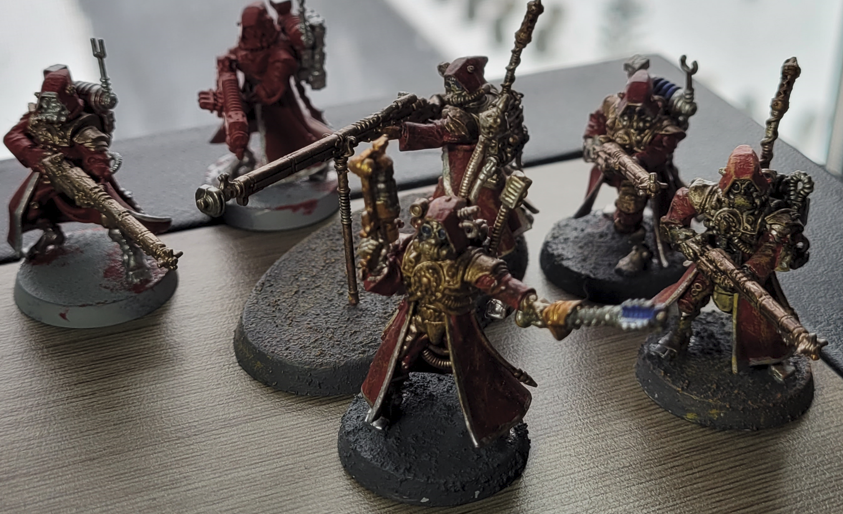

Hobbies
- Warhammer Tabletop
- Model Building/Painting
- Video Games
- MTG
The most prevalent of my hobbies which is Warhammer manages to manifest itself into really more of two hobbies.
Model building being the main one with a huge amount of support from the actual lore behind the models and the 40K universe.
40K is a huge universe with so much to cover, so typically I use Lexicanum to help with such a diverse galaxy of stories.
Visit Lexicanum here!